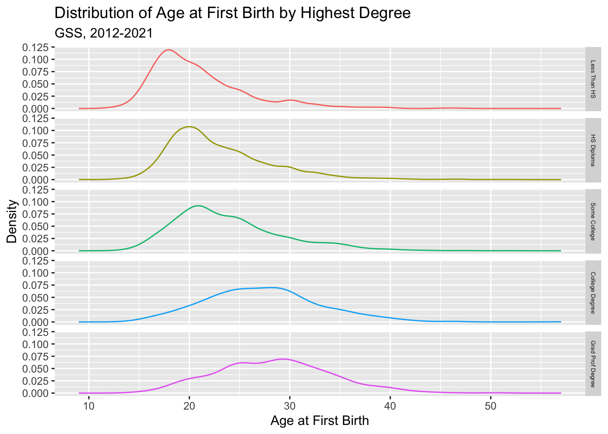
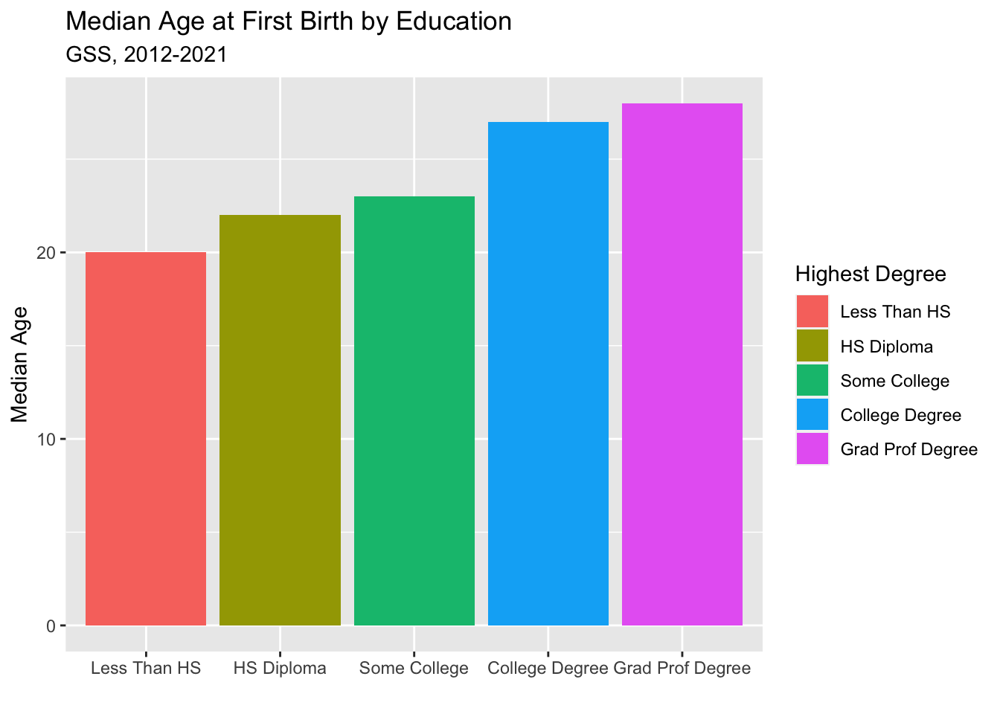
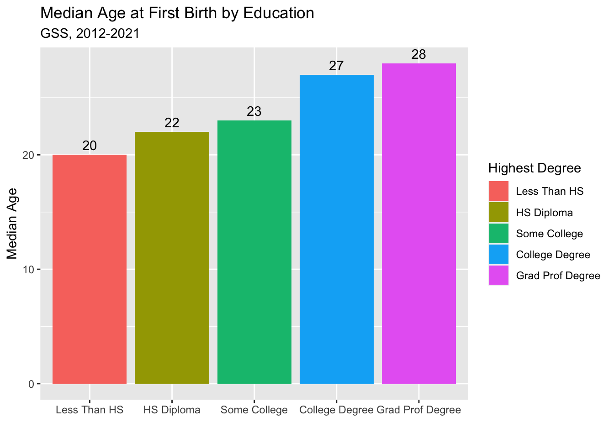

gss_week3 <- read.csv("https://raw.githubusercontent.com/mjclawrence/soci385_f23/main/data/gss_week3.csv")
library(tidyverse)Week Three, Class Two
Getting Started
We are still using the gss_week3 dataset, and we will be using tidyverse packages. Reload the data and tidyverse if you are starting a new notebook.
More Than Two Categories
New variables can have more than two categories. Their values can also be characters rather than numbers. In this example, we’ll create a new variable called edcat that puts years of education into the following education categories: “Less Than HS”, “HS Diploma”, “Some College”, “College Degree”, and “Grad Prof Degree”. How should we cut the values of the educ variable to make these categories?
Even though we are creating more than two categories, we can still use ifelse() to set them up. The trick is that each “else” condition will open another ifelse() function until we are ready to assign remaining observations to the last category.
gss_week3 <- gss_week3 |>
mutate(edcat = ifelse(educ < 12, "Less Than HS",
ifelse(educ == 12, "HS Diploma",
ifelse(educ %in% 13:15, "Some College",
ifelse(educ == 16, "College Degree",
"Grad Prof Degree")))))The use of %in% for the “Some College” group is new. That’s a helpful tool for capturing values within a range.
What proportion of respondents is in each education category?
REPLACE THIS LINE WITH YOUR CODE
sort(round(prop.table(table(gss_week3$edcat)),3),decreasing = TRUE)
HS Diploma Some College Less Than HS College Degree
0.292 0.250 0.166 0.159
Grad Prof Degree
0.133 The next step is to tell R we will be using this new variable as a factor variable. We do this using mutate() as well. We also need to assert the order of the categories (from lowest to highest), since by default the categories are listed alphabetically. To assert the order, we will add the levels = c() option. We don’t need to use the labels = c() option this time because our values already have character names.
gss_week3 <- gss_week3 |>
mutate(edcat = factor(edcat,
levels = c("Less Than HS",
"HS Diploma",
"Some College",
"College Degree",
"Grad Prof Degree")))Let’s get a sense of how the distribution of age at first birth varies by education by overlaying density plots of agekdbrn for each level of edcat. Set everything up in ggplot2 the same way as before (but adjust the title as appropriate). Use edcat for our color option so each level of edcat gets a density plot in a different color.
agekdbrn_edcat_plot <- ggplot(gss_week3,
aes(x = agekdbrn,
color = edcat))
agekdbrn_edcat_plot + geom_density() +
labs(x = "Age at First Birth", y = "Density",
title = "Distribution of Age at First Birth by Highest Degree",
subtitle = "GSS, 2012-2021")
Another way to change the title of the legend is to add color = to the labs() function:
agekdbrn_edcat_plot <- ggplot(gss_week3, aes(x = agekdbrn, color = edcat))
agekdbrn_edcat_plot + geom_density() +
labs(x = "Age at \nFirst Birth", y = "Density",
title = "Distribution of Age at First Birth by Highest Degree",
subtitle = "GSS, 2012-2021",
color = "Highest Degree") 
Facets (If There Is Time)
The overlapping plots are quite effective in this case. That’s not always true. Another option would be to have a separate plot for each category. You can do that with faceting. In this example, we want to facet into rows with edcat~.. Note that with faceting you don’t need a legend anymore. You can delete it using guides(color="none").
agekdbrn_edcat_plot <- ggplot(gss_week3, aes(x = agekdbrn, color = edcat))
agekdbrn_edcat_plot + geom_density() +
labs(x = "Age at First Birth", y = "Density",
title = "Distribution of Age at First Birth by Highest Degree",
subtitle = "GSS, 2012-2021") +
facet_grid(edcat~.) + guides(color="none")
Delete from class notebook
To change size of text in label “strips”:
agekdbrn_edcat_plot <- ggplot(gss_week3, aes(x = agekdbrn, color = edcat))
agekdbrn_edcat_plot + geom_density() +
labs(x = "Age at First Birth", y = "Density",
title = "Distribution of Age at First Birth by Highest Degree",
subtitle = "GSS, 2012-2021") +
facet_grid(edcat~.) + guides(color="none") +
theme(strip.text.y = element_text(size = 5))
You can facet into columns by replacing edcat~. with .~edcat. Which would make more sense in this case?
agekdbrn_edcat_plot <- ggplot(gss_week3, aes(x = agekdbrn, color = edcat))
agekdbrn_edcat_plot + geom_density() +
labs(x = "Age at First Birth", y = "Density",
title = "Distribution of Age at First Birth by Highest Degree",
subtitle = "GSS, 2012-2021") +
facet_grid(.~edcat) + guides(color="none")
Good rule of thumb: faceting by rows is better when comparing the x axis and faceting by columns is better when comparing the y axis.
Back to Basics
Let’s take a break from graphics for a moment and think about tables and basic summaries again. If you wanted to find the proportion of respondents in each education category for a specific race/ethnicity category (use the racehisp variable), what might you do?
REPLACE THIS LINE WITH YOUR CODE
round(prop.table(table(gss_week3$edcat
[gss_week3$racehisp=="Black"])),3)
Less Than HS HS Diploma Some College College Degree
Grad Prof Degree
Another option would be a cross-tabulation. We set up a cross-tabulation using the same syntax as the table() function, but now we’ll have two variables separated by a comma. The values of our first variable will become the rows in the table, and the values of the second variable will become the columns. This ordering matters! Think of the row variable as your independent variable (the X) and the column as your dependent variable (the Y). If that’s the setup, why would we want the values of racehisp to become the rows in this table and the values of edcat to become the columns?
table(gss_week3$racehisp, gss_week3$edcat)
Less Than HS HS Diploma Some College College Degree Grad Prof Degree
black 214 321 350 139 91
hispanic 372 289 212 78 69
other 42 48 64 67 56
white 525 1369 1113 817 709How do you think you make a cross-tabulation with proportions?
REPLACE THIS LINE WITH YOUR CODE
round(prop.table(table(gss_week3$racehisp, gss_week3$edcat)),3)
Less Than HS HS Diploma Some College College Degree Grad Prof Degree
black 0.031 0.046 0.050 0.020 0.013
hispanic 0.054 0.042 0.031 0.011 0.010
other 0.006 0.007 0.009 0.010 0.008
white 0.076 0.197 0.160 0.118 0.102By default, these proportions are for the entire table. So the top left cell tells us that 3% of all the cases in this data frame are Black respondents who did not complete high school.
To get row proportions, add a comma and a 1 (since the first variable in our table command is the row variable) before closing the prop.table parentheses.
round(prop.table(table(gss_week3$racehisp, gss_week3$edcat),1),3)
Less Than HS HS Diploma Some College College Degree Grad Prof Degree
black 0.192 0.288 0.314 0.125 0.082
hispanic 0.365 0.283 0.208 0.076 0.068
other 0.152 0.173 0.231 0.242 0.202
white 0.116 0.302 0.246 0.180 0.156Each row in the above table sums to 1. To get column proportions, replace the 1 with a 2. In the table below, each column should sum to 1. In general, we’ll use row proportions more than column proportions.
REPLACE THIS LINE WITH YOUR CODE
addmargins(round(prop.table(table(gss_week3$racehisp, gss_week3$edcat),2),3))
Less Than HS HS Diploma Some College College Degree Grad Prof Degree
black 0.186 0.158 0.201 0.126 0.098
hispanic 0.323 0.143 0.122 0.071 0.075
other 0.036 0.024 0.037 0.061 0.061
white 0.455 0.675 0.640 0.742 0.766
Sum 1.000 1.000 1.000 1.000 1.000
Sum
black 0.769
hispanic 0.734
other 0.219
white 3.278
Sum 5.000We have seen other functions that help with finding values of one variable for all values of another variable. For example, we might want to find the mean age at first birth for each race/ethnicity category. To do so, we first group all the observations by the categorical variable. Then we create a variable that summarizes one variable for all the categories of our other variable. And we can connect these functions with pipes. To use the output from this summary, we’ll save the output in a new dataframe named agekdbrn_summary.
agekdbrn_summary <- gss_week3 |>
group_by(racehisp) |> # We want info about each level of this variable
summarise(mean_agekdbrn = round(mean(agekdbrn),2)) # The info we want
agekdbrn_summary# A tibble: 4 × 2
racehisp mean_agekdbrn
<chr> <dbl>
1 black 22.0
2 hispanic 23.0
3 other 25.2
4 white 25.1This summarise() function works with a lot of the basic commands we have discussed (min, max, sd, var, etc.). Try finding the median age at first birth for each education category. You can still use the agekdbrn_summary object:
REPLACE THIS LINE WITH YOUR CODE
agekdbrn_summary <- gss_week3 |>
group_by(edcat) |>
summarize(median_agekdbrn = median(agekdbrn))
agekdbrn_summary# A tibble: 5 × 2
edcat median_agekdbrn
<fct> <int>
1 Less Than HS 20
2 HS Diploma 22
3 Some College 23
4 College Degree 27
5 Grad Prof Degree 28Let’s end with a plot visualizing the distribution of median age at first birth by education level.
For this plot, we have an x axis variable (edcat) and a y axis variable (median_agekdbrn). We want something that looks like the output from geom_barplot(), but we use geom_col() when we have both x and y variables.
agekdbrn_col <- ggplot(agekdbrn_summary, aes(x = edcat,
y = median_agekdbrn,
fill = edcat))
agekdbrn_col + geom_col() +
labs(x = "",
y = "Median Age",
title = "Median Age at First Birth by Education",
subtitle = "GSS, 2012-2021",
fill = "Highest Degree")
With column labels…
agekdbrn_col <- ggplot(agekdbrn_summary, aes(x = edcat,
y = median_agekdbrn,
fill = edcat))
agekdbrn_col + geom_col() +
labs(x = "",
y = "Median Age",
title = "Median Age at First Birth by Education",
subtitle = "GSS, 2012-2021",
fill = "Highest Degree") +
geom_text(aes(label = median_agekdbrn),
vjust = -.5) # Moves the labels above the columns